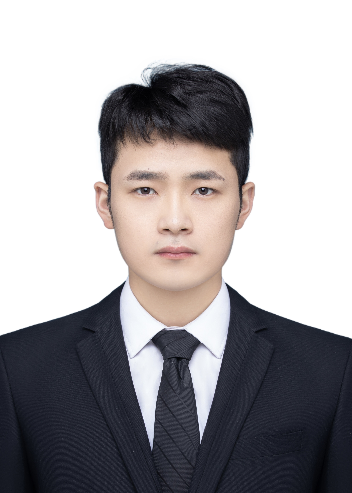

周昊 (Hao Zhou)
|  | 硕士研究生 |
关于我
我目前在江苏大学 计算机科学与通信工程学院攻读计算机科学与技术的硕士学位。 本人已于2021年在烟台大学文经学院获得学士学位。
我的研究兴趣主要包括: 计算机视觉，深度学习，可解释性 等。
教育经历
硕士 江苏大学 (2021.9 ~ 现在)
|
|
|
本科 烟台大学文经学院 (2017.9 ~ 2021.7)
|
学术论文
Improving Interpretability by Information Bottleneck Saliency Guided Localization
Hao Zhou, Keyang Cheng, Yu Si and Liuyang Yan
British Machine Vision Conference (BMVC 2022). [CCF C类会议] [PDF]
MMDV: Interpreting DNNs via Building Evaluation Metrics, Manual Manipulation and Decision Visualization
Keyang Cheng, Yu Si, Hao Zhou, and Rabia Tahir
ACM International Conference on Multimedia (ACM MM 2022). [CCF A类会议] [PDF]
Sonar Image Garbage Detection via Global Despeckling and Dynamic Attention Graph Optimization
Keyang Cheng, Liuyang Yan, Yi Ding, Hao Zhou, Maozhen Li and Humaira abdul Ghafoor
Neurocomputing. [SCI期刊 中科院 二区]
DRIB: Interpreting DNN with Dynamic Reasoning and Information Bottleneck
Yu Si, Keyang Cheng, Zhou Jiang, Hao Zhou and Rabia Tahir
International Conference of Pioneering Computer Scientists, Engineers and Educators (ICPCSEE 2022). [EI会议] [PDF]
Unified Intelligible Deep Modeling via Interpretable Regularization Library and Human-in-the-loop
Yu Si, Hao Zhou and Keyang Cheng
IEEE Conference on Computer Vision and Pattern Recognition (CVPR 2023已投). [CCF A类会议]
发明专利
基于动态推理决策与信息瓶颈的可解释深度网络构建方法
成科扬, 司宇, 周昊, 张海烽, 施宇楠, 余悦
国家发明专利, 公开号:CN115204358A